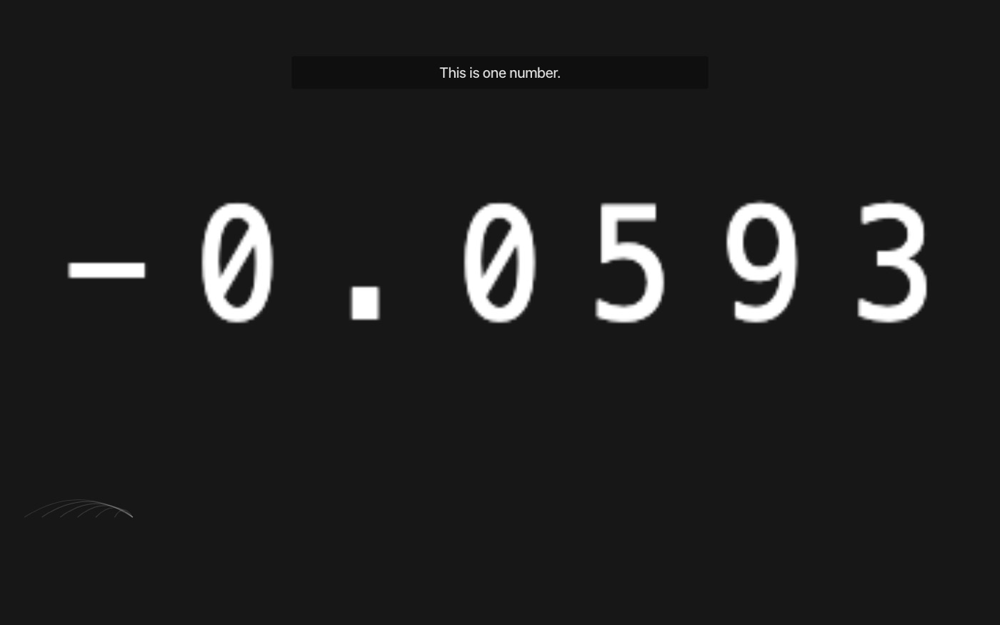
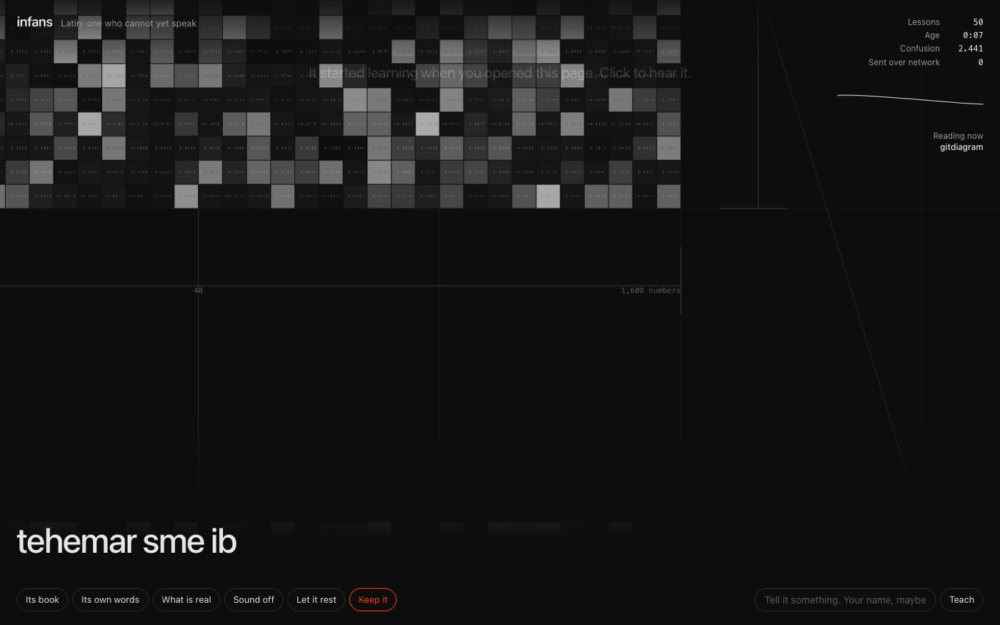
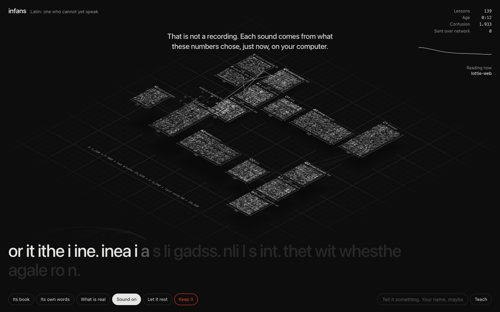
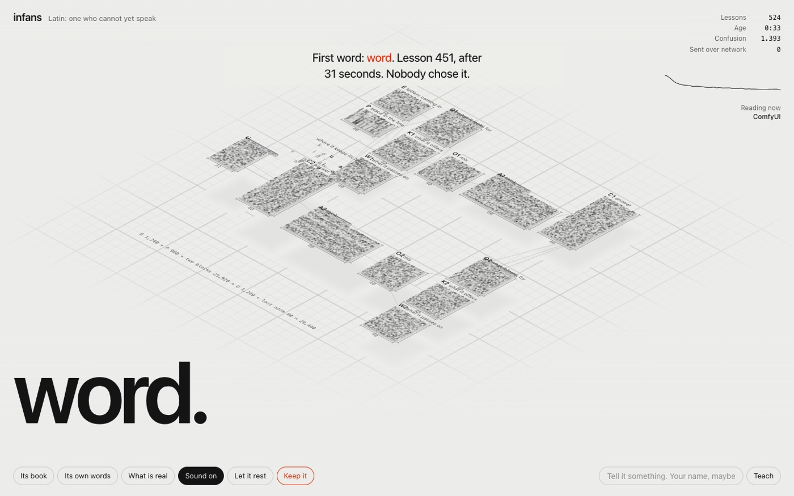
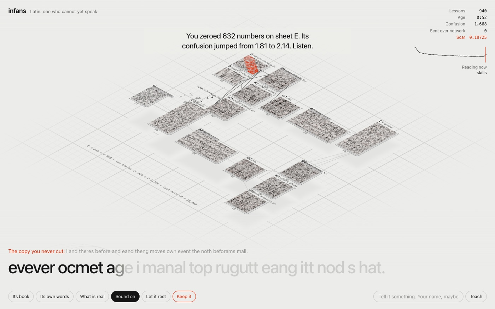
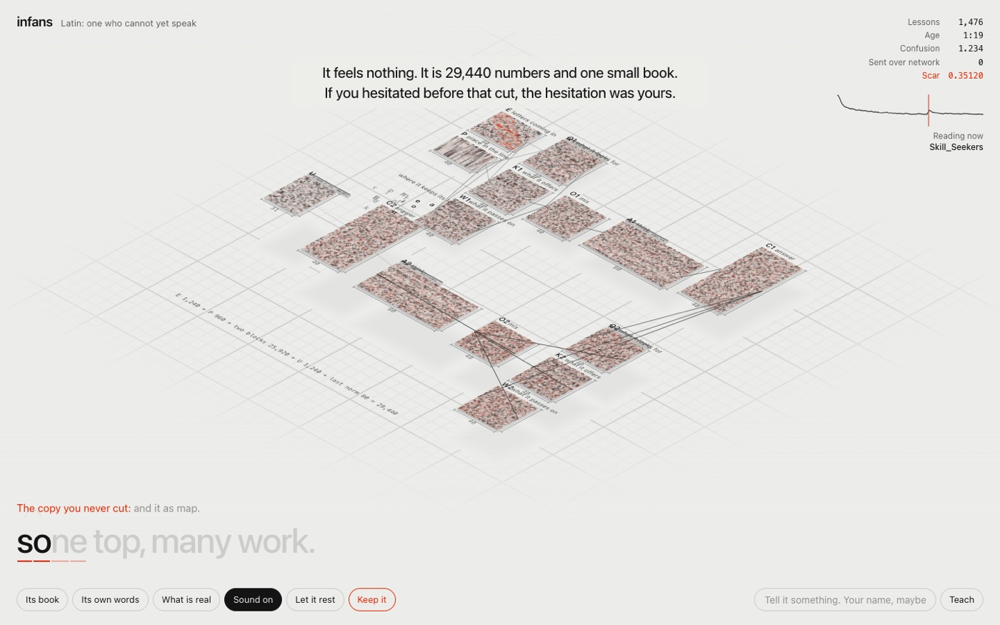
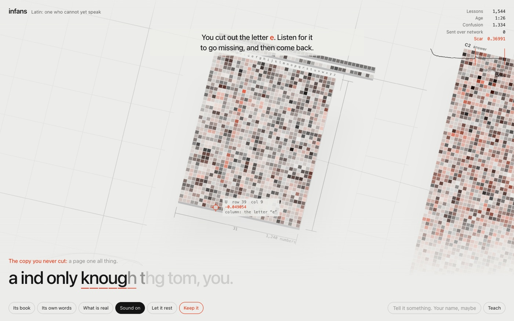
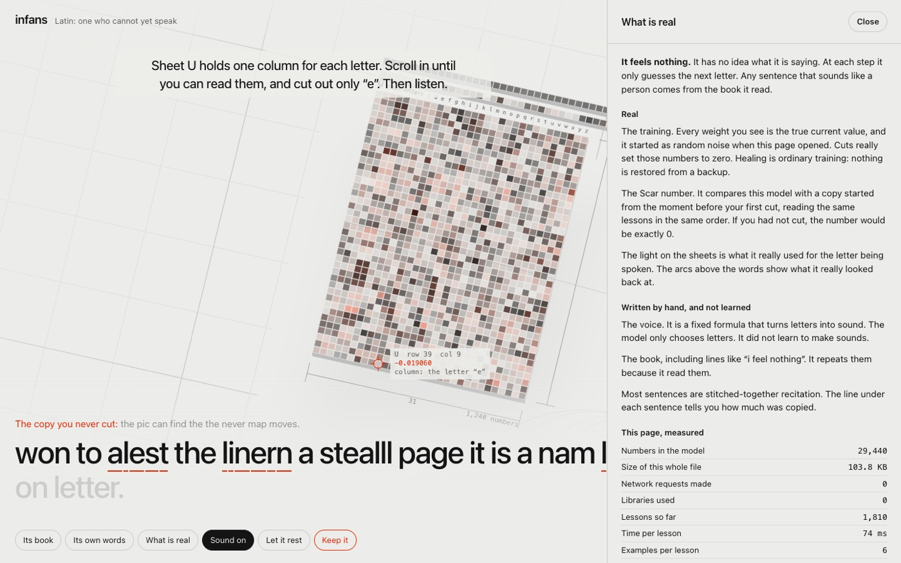

Made for Chrome on a laptop. Click inside the frame for sound. Your fan may spin, because the training is real. Full screen or Open alone gives the best view.
What I tried
I asked for something unexpected, built from the full potential of my starred GitHub repos. After research across those repos and experimental websites, this idea beat five others.
INFANS is Latin for "one who cannot yet speak". It starts as 29,440 random numbers and trains live in your tab, with no server and no download.
- Listen. Noise turns into syllables, then its first real word.
- Cut. Drag across a sheet. Those numbers really become zero. A wide cut on sheet E hurts it most.
- Cut one letter. Double-click sheet U and cut the column under "e". It loses that letter for a while.
- Watch Scar. An uncut copy reads the same lessons. Without your cut, the number stays exactly 0.
- Teach it. Type your name. It may say it back.
- Keep it. It is gone when you close the tab. This saves one file that goes on learning.
It feels nothing. It only guesses the next letter. The voice is a fixed formula, its book was written by hand, and most sentences are stitched from that book. The page shows how much was copied.
Its book has one original verse for each of my 49 starred repos, in the order I starred them.
Stills







